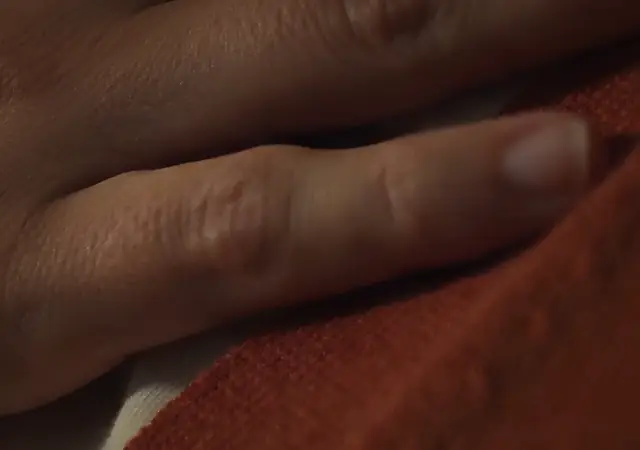

Cardiologia · Check-up · São Paulo
Seu coração,
com precisão.
Consulta, eletrocardiograma, ecocardiograma, teste ergométrico e exames de laboratório numa só manhã. E o resultado explicado pelo cardiologista no mesmo dia.
Resp. técnico: Dr. Nome Sobrenome · CRM-SP 000000 · RQE 0000
Seu coração bate cerca de
100.000
vezes por dia.
Sem pausa e sem pedir licença. E, quase sempre, sem avisar quando alguma coisa muda.
Desde que você abriu esta página: 0 batidasna conta de 100.000 por dia
Muito do que muda no coração não dá sinal no começo.
- Pressão alta
- Colesterol alto
costumam não dar sintomas.
Por isso o check-up não espera o coração reclamar. Ele olha antes, com calma e com método, enquanto ainda dá tempo de escolher o próximo passo.
Conteúdo informativo, não substitui a consulta.
Check-up cardiológico
5 etapas.
1 manhã.
Tudo no mesmo lugar, em sequência, sem voltar outro dia para cada exame. Os exames são definidos conforme o seu perfil de risco.
-
01 a conversa
Consulta
O cardiologista ouve a sua história, a da sua família, os remédios que você usa e o que você sente. É daqui que sai o plano da manhã.
-
02 a atividade elétrica do coração
Eletrocardiograma
Eletrodos na pele registram o ritmo e a condução elétrica do coração. É rápido e feito em repouso, deitado.
-
03 o ultrassom do coração
Ecocardiograma
Imagens em movimento mostram o tamanho das cavidades, a força do músculo e o funcionamento das válvulas.
-
04 o coração no esforço
Teste ergométrico
Na esteira, com acompanhamento médico, observa-se como o coração e a pressão respondem ao exercício.
-

05 colesterol, glicose e mais
Exames de laboratório
A coleta de sangue mostra colesterol, glicose e outros marcadores que o cardiologista indicar para o seu caso.
Resultado explicado pelo cardiologista, no mesmo dia.
Você não sai com um envelope e uma dúvida.
Antes de ir embora, o cardiologista senta com você, mostra o que cada exame encontrou e explica, em português claro, o que fazer a partir daqui.
- O que foi visto em cada etapa
- O que pede atenção, e o que não pede
- Os próximos passos e quando voltar
Precisão é como a gente examina. Cuidado é como a gente recebe.
Lista de hoje
- a vacina do filho (feito)
- o remédio da mãe (feito)
- o exame do marido (feito)
- e o seu coração?
Quando foi a última vez que alguém cuidou dele?

As doenças do coração
1ª causa de morte das mulheres no Brasil.
Fonte: Sociedade Brasileira de Cardiologia (SBC), 2022.
Quem cuida de todo mundo costuma deixar o próprio check-up para depois. Por isso ele foi desenhado para caber numa manhã.
Cuidado
Com uma cardiologista que te escuta, sem pressa.
A manhã do check-up é sua. Dá tempo de contar a história inteira, de perguntar o que quiser e de entender cada resposta.
Quem cuida de todo mundo também merece cuidado.
Agendar o meu check-upPara quem é
Para quem quer olhar o coração antes que ele precise avisar.
Quem tem pressão alta, colesterol alto ou casos na família
Pressão e colesterol altos costumam não dar sintomas. A história da família também conta: ela muda o que o cardiologista procura.
Quem vai começar, ou voltar, a fazer exercício
Antes de aumentar o esforço, vale saber como o coração responde a ele. É para isso que existe o teste na esteira.
Quem nunca fez um check-up do coração
Ou não lembra quando fez. Sem sintoma não quer dizer sem motivo: muito do que muda no coração não dá sinal no começo.
Quem cuida de todo mundo e sempre se deixa para depois
A vacina do filho, o remédio da mãe, o exame do marido. A sua consulta também cabe na lista.
Equipe
Quem te recebe na consulta é quem explica o resultado.
Cardiologistas e enfermagem dividem a manhã, cada um na sua etapa. Todo médico aparece com CRM e, na especialidade, com RQE.
Diretor técnico
Dr. Nome Sobrenome
Médico · CRM-SP 000000 · Cardiologia · RQE 0000
Cardiologista
Dra. Nome Sobrenome
Médica · CRM-SP 000000 · Cardiologia · RQE 0000 · Ecocardiografia · RQE 0000
Cardiologista
Dr. Nome Sobrenome
Médico · CRM-SP 000000 · Cardiologia · RQE 0000
Enfermagem
Nome Sobrenome
Enfermeira · COREN-SP 000000
Equipe fictícia: nomes e registros são exemplos deste projeto de demonstração.
Conheça a equipePreciso de pedido médico para agendar o check-up?
Para agendar, não. Na consulta, que é a primeira etapa, o cardiologista avalia o seu caso e indica os exames que fazem sentido para você.
Quanto tempo leva?
Uma manhã. As cinco etapas acontecem em sequência, no mesmo lugar, sem você precisar voltar outro dia para cada exame.
Recebo o resultado no mesmo dia?
Sim. Antes de você ir embora, o cardiologista explica o que cada exame mostrou e combina com você os próximos passos.
Preciso de jejum?
Depende dos exames de sangue indicados para você. A orientação de jejum vai por escrito na confirmação do agendamento. Não pare nenhum remédio por conta própria.